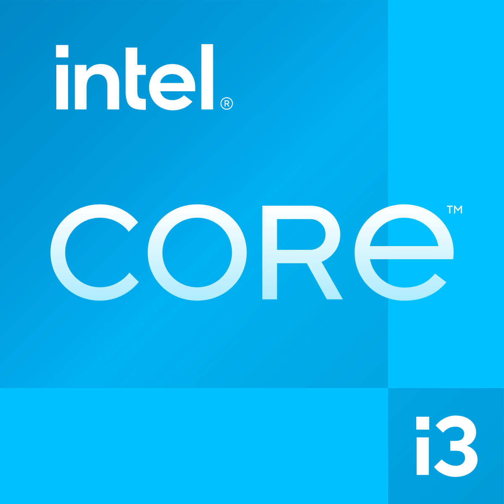

Dell Vostro 3500 15.6" FHD (i3-1115G4/8GB/256GB SSD/W10 Home) (GR Keyboard)
- Κωδικός Προϊόντος: 010601
- Τιμή: 500 €
Σύντομη Περιγραφή
Φορητός υπολογιστής 15,6 ιντσών με στενό περιθώριο στις δύο πλευρές, μπαταρία ExpressCharge και επεξεργαστή Intel Core 11ης γενιάς.
Αναλυτική Περιγραφή
Το Dell Vostro 3500 είναι ένα Notebook με οθόνη 15.6" που είναι το συνηθέστερο μέγεθος για κάθε χρήση. Η ανάλυση είναι 1920x1080 (Full HD) που αποτελεί την standard λύση μεταξύ ποιότητας εικόνας, κόστους και κατανάλωσης μπαταρίας. Όσο μεγαλύτερη ανάλυση, τόσο καλύτερη ευκρίνεια και λεπτομέρεια έχει η εικόνα αλλά παράλληλα αυξάνεται και η κατανάλωση ενέργειας.
Ο επεξεργαστής που ενσωματώνει είναι ο Intel Core i3 1115G4 χρονισμένος στα 3Ghz της γενιάς Tiger Lake (11th Gen) (2021). Μπορεί να εκτελέσει απροβλημάτιστα εργασίες καθημερινής φύσεως όπως πλοήγηση στο διαδίκτυο, επεξεργασία κειμένου και μη απαιτητικό Gaming.
Διαθέτει μνήμη 8GB RAM DDR4 που είναι η ελάχιστη προτεινόμενη για καθημερινή χρήση.
Εξοπλίζεται με έναν δίσκο SSD των 256GB. Αυτή η χωρητικότητα είναι αρκετή για το λειτουργικό σύστημα και για μερικά βασικά προγράμματα αλλά πιθανόν να χρειαστεί και ένας εξωτερικός σκληρός δίσκος για την αποθήκευση μεγάλου όγκου φωτογραφιών, video κ.α. Επίσης εκτός απο εξωτερικό σκληρό, υπάρχει η δυνατότητα να αντικατασταθεί ο υπάρχον εσωτερικός δίσκος με άλλον μεγαλύτερης χωρητικότητας.
Περιλαμβάνει το λειτουργικό σύστημα Windows 10 Home.
Το Card Reader που διαθέτει είναι χρήσιμο για τον χρήστη που ασχολείται με την φωτογραφία και το video. Σε αντίθετη περίπτωση θα χρειαστεί η αγορά ξεχωριστού Card Reader το οποίο και θα πρέπει να καταλάβει μια απο τις υπάρχουσες θύρες USB του Laptop. Τέλος, διαθέτει συνδεσιμότητες όπως Bluetooth, Ethernet, HDMI, USB 2.0, USB 3.1, Wi-Fi. Με την θύρα HDMI, μπορείτε να συνδέσετε εξωτερική οθόνη, τηλεόραση ή Home Cinema που διαθέτει την συγκεκριμένη θύρα με σκοπό την επέκταση της επιφάνειας εργασίας, την προβολή ταινιών απο το Laptop σε μεγαλύτερες οθόνες και τη μεταφορά του ήχου σε ποιοτικότερες πηγές. Μέσω bluetooth μπορείτε να συνδεθείτε ασύρματα σε συσκευές που διαθέτουν την συγκεκριμένη λειτουργία όπως ασύρματα ακουστικά και ασύρματα ηχεία.
Manufacturer's siteΧαρακτηριστικά
Επεξεργαστής (CPU)
- Κατασκευαστής
- Intel
- Οικογένεια
- Core i3
- Μοντέλο
- 1115G4
- Συχνότητα
- 3 GHz
- Γενιά
- Tiger Lake (11th Gen)
Οθόνη
- IPS Panel
- Όχι
- OLED
- Όχι
- Διαγώνιος
- 15,6 "
- Δυνατότητες
- Full HD
- Ανάλυση
- 1920x1080
Μνήμη RAM
- Χωρητικότητα Μνήμης
- 8 GB
- Τύπος
- RAMDDR4
- Μοντέλο
- 1115G4
Κάρτα Γραφικών
- Κατασκευαστής
- Intel
- Μοντέλο
- UHD Graphics
- Shared Μνήμη
- Ναι
Σκληρός Δίσκος
- Τύπος Σκληρού
- SSD
- Χωρητικότητα Σκληρού Δίσκου
- 256 GB
Μέσα Ανάγνωσης
- Card Reader
- Ναι
Συνδεσιμότητα
- Συνδέσεις
- Bluetooth, Ethernet, HDMI, USB 2.0, USB 3.1, Wi-Fi
- Δακτυλικό Αποτύπωμα
- Όχι
Λογισμικό
- Λειτουργικό Σύστημα
- Windows 10 Home
Γενικά Χαρακτηριστικά
- Βάρος
- 1,98 kg
- Τύπος
- Notebook
- Χρώμα
- Μαύρο
- Γλώσσα Πληκτρολογίου
- Ελληνικά
Βαθμολογίες
- Ταχύτητα
- 4,5
- Touchpad
- 4,5
- Πληκτρολόγιο
- 4,5
- Οθόνη
- 4,5
- Σχέση ποιότητας τιμής
- 4
- Θερμοκρασία
- 4
- Βάρος
- 4
- Διάρκεια μπαταρίας
- 4
Αξιολογήσεις
Βαθμολογία: 3
αυτο το λαπτοπ το πηρα πριν απο 1 χρονο και 2 μηνες και εχω να πω τα εξης.
αμα ψαχνεται ενα λαπτοπ για μια απλη χρηση ειναι καλο αλλα μη περιμενεται πολλα απο αποδωσει
η οθονη εναι μια απλη 1920x1080π ιπς
οσο αναφορα το keyboard για τα λεφτα τ καλο ειναι
το λαπτοπ στην πρωτη σειρα του keyboard εχει κουμπια για πολλες και διαφορες χρησεις πχ για τη φωτηνοτητα, τον ηχο καθως και καποια αλλα τα οποια πιστευω πως ειναι πολυ χρησημα και τα χρησημποιω ολη την ωρα
η μπαταρια για το βαρος του λαπτοπ ειναι καλη το λεω αυτο διοτι το χρησημοποιω οταν ταξιδευω και μπορω να πω πως αμα το βαλετε και σε εξηκονομησει ενεργειας θα αντεξει ανετα 4-5 ωρες συνεχομενης χρησης { νετφλιξ, γιοτουμπ}
τα 4gb ram δεν ειναι αρκετα και καλο θα ηταν να κανετε αναβαθμησει αμα το αγορασετε
ο επεξεργαστης ενας απλος i3 11 gen ειναι οποτε μην περιμενετε πολλα
το λαπτοπ ζεστενεται ευκολα ακομα και οταν εισαστε στο netflix ,youtube , κλπ
{πιστευω πως εχει να κανει με το κακο desing του}
με 100-200 ευρω παραπανω μπορειτε να βρειτε λαπτοπ που ειναι ποιο value for money απο οτι αυτο
Θα έβαζα 5 αστέρια αν η οθόνη του δεν χάλαγε μέσα σε 8 μήνες.
Μία μέρα το άνοιξα και την βρήκα γεμάτη γραμμές. Η εγγύηση δεν το κάλυπτε και ζήτησαν 256€ για την επισκευή. Να σημειωθεί ότι σε τοπικό κατάστημα μου αντικατέστησαν την οθόνη για 160€.
Κατά τ'άλλα, για τη χαλαρή χρήση που έκανα, απολύτως ικανοποιητικό. Προφανώς, βέβαια, ούτε το συστήνω, ούτε πρόκειται να ξανά επενδύσω σε προϊόντα της συγκεκριμένης εταιρείας.
το έχω 1 χρόνο και δεν έχει προβλήματα. Αξίζει τα λεφτά του!!